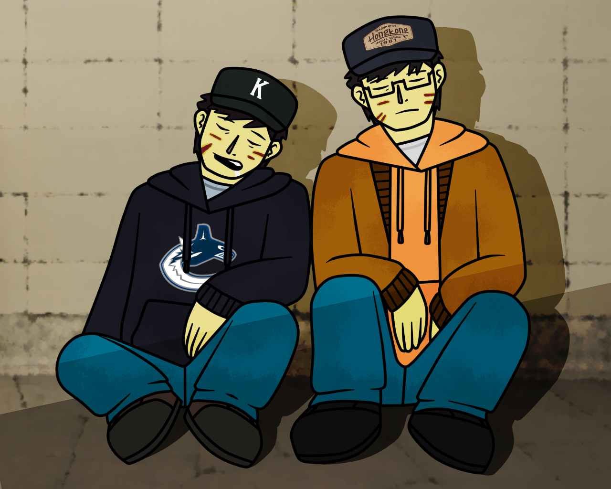
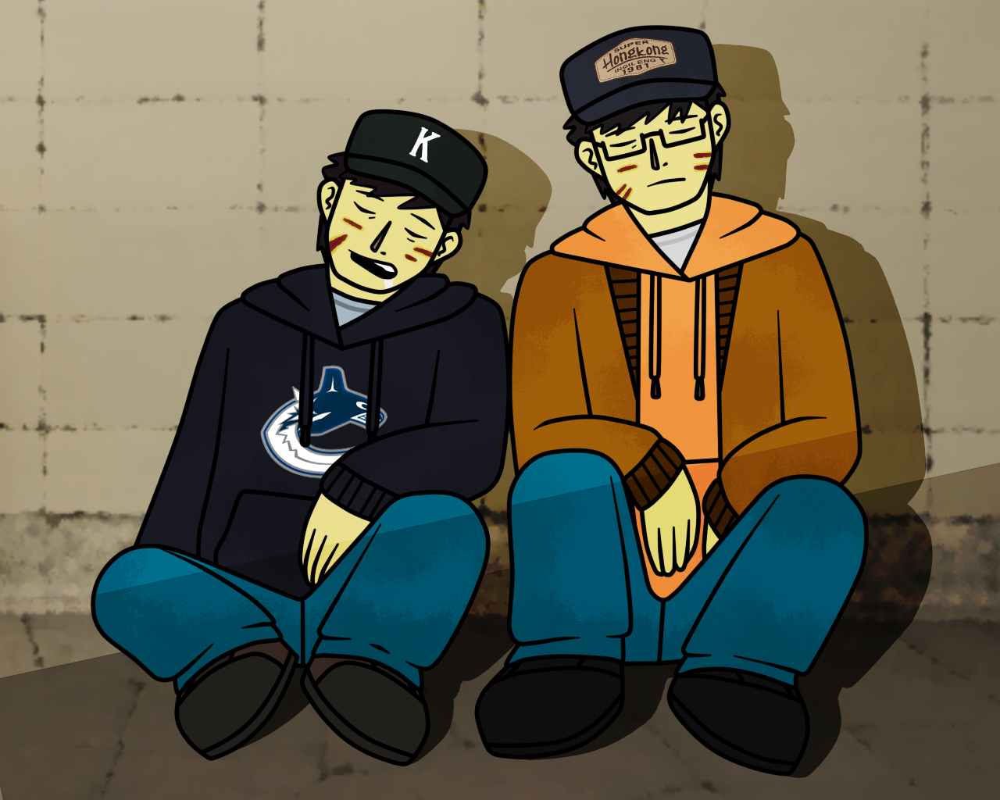

On February 11, 2018, a massive Magnitude 8.0 earthquake hit the Pacific Northwest region of North America,
impacting several major cities across Canada and the United States, including Vancouver, Victoria, Seattle, and Portland.
Dubbed "The Pacific Northwest Disaster", the quake was the result of a slip between two plates off the North American coast
in an area known as the "Cascadia subduction zone". Beginning in Northern California, the slip resulted in a disastrous
chain reaction that quickly moved northward toward Vancouver, releasing in its wake a massive earthquake that lasted over 7 minutes,
and triggering a 40-meter high Tsunami that engulfed dozens of coastal towns from northern California, all the way to the southern
tip of Vancouver Island.
The disaster became the worst in North American history and the second deadliest earthquake in recorded history, killing more than
800,000 people in both the United States and Canada, surpassing both the 2004 Indian Ocean Tsunami and the 2011 Tohoku Earthquake
as the deadliest disaster of the 21st Century. Some estimates go even further, claiming that up to 2 million dead or missing
as a result of the earthquake and tsunami.
Despite attempts to prepare for such a disaster, insufficient reinforcement of infrastructure and buildings causes many to collapse from stress,
bringing them and the people within to rubble. In addition, power lines, communication towers, and energy-generating facilities are also brought
down, cutting off many towns and cities from the outside world. The power outages also mean that many tsunami warning systems also fail, leaving
many towns unprepared and, in some cases, unaware of the impending disaster. The failures also hamper emergency communications from working
effectively, causing hospitals, fire departments, and even military to become all quickly overwhelmed by the number of injured and dead in the aftermath.
In Canada, with the Provincial Governments of British Columbia struggling to manage the growing crisis, the Federal Government of Canada alongside
Provincial Governments of Alberta and Saskatchewan, the Canadian Royal Forces, and international aid from the US, Japan, New Zealand, Taiwan, and others
rush to the Pacific Northwest to provide whatever help they can. In the meantime, it will be up to the citizens of British Columbia to come together and
do what they can to survive...
Collapsing Cascades tells the story of two young survivors, Oliver Leung and Tim Huang,
as they attempt to traverse a crumbling Vancouver in the horrid aftermath.
With bodies piling every corner and endless aftershocks that threaten to knock out the every building in the region,
the two will have to literally fight to survive as they walk from Vancouver to an makeshift emergency centre at Vancovuer International Airport, in
what will be a desperate struggle to find their friends and loved ones,
for better or worse...